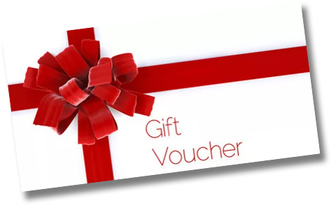

Firma KatSail oferuje rejsy Katamaranem Sportowym pod okiem doświadczonego sternika, na Jeziorze Kierskim w Poznaniu.
Rejs przeznaczony dla osób początkujących, które chcą poczuć wiatr we włosach i miło spędzić czas na wodzie.
Ilość: 1-2 os.
Czas: 1-2h
Cena: 250zł
Oprócz zwykłej żeglugi oferuje szkolenie żeglarskie w zakresie sterowania jachtem, halsowania i pracy żagli. Dla osób początkujących lub zaawansowanych.
Ilość: 1-2 os.
Czas: 3-4h
Cena: 400zł
Obejmuje szkolenie podstawowe wraz z nauką balastowania na trapezie (poza burtą). Przeznaczony dla osob doświadczonych.
Ilość: 1 os.
Czas: 2-3h
Cena: 400zł
Rejs rekreacyjny dla dzieci pod opieką rodzica. Świetna zabawa na wodzie dla maluchów.
Ilość: 2 dzieci
plus 1 rodzic
Czas: 2-3h
Cena: 400zł
Możliwość łączenia rożnych rejsów w pakiety. Obsługujemy również Firmy. Jeśli chcesz wykupić pakiet - możesz liczyć na atracyjną cenę.
Dowolna liczba rejsów
Można łączyć różne rodzaje
Cena: Do uzgodnienia
Szukasz pomysłu na prezent urodzinowy? A może chcesz zaskoczyć swoją Drugą Połówkę? Podaruj najbliższej osobie coś wyjątkowego.
Klub żeglarski PKM LOK zlokalizowany jest przy brzegu Jeziora Kierskiego, przy ul. Rekreacyjej w Poznaniu. Jest to piękne miejsce blisko natury, gdzie można odetchnąć czystym powietrzem i zrelaksować się po cieżkim tygodniu pracy. Nasz Klub prowadzi liczne zajęcia dla dzieci i młodzieży, oraz zrzesza wielu fanów żeglarstwa z całej Wielkopolski.
Cześć. Mam na imię Bartek i jestem żeglarzem. Od dziecka uwielbiam spędzać czas na wodzie, być blisko natury i czuć wiatr we włosach. Od 25 lat jestem członkiem klubu żeglarskiego PKM LOK w Kiekrzu. Kiedyś regularnie trenowałem i startowałem w regatach na terenie całej Polski oraz na Morzu Bałtyckim. Wiele razy stawałem na podium w różnych regionach naszego kraju, a nawet trzykrotnie udało mi się zdobyć tytuł vice - Mistrza Polski. Aktualnie żegluję rekreacyjnie, bo to kocham 🧡
Jezioro Kierskie, zwane potocznie Kiekrzem jest położone w zachodniej części Poznania, w dzielnicy Krzyżowniki - Smochowice. Jest ono najważniejszym akwenem regatowo - sportowym w Wielkopolsce. To tutaj ma swoją siedzibę aż 12 klubów żeglarskich, które to dumnie rozciągają się wzdłuż linii brzegowej. Żeglując na katamaranie można swobodnie opłynąć całe jezioro i obejrzeć każdą przystań z osobna, bez konieczności dobijania do brzegu. Oprócz tego na "Kiekrzu" bardzo często odbywają się regaty (wyścigi żaglówek), a żegluga katamaranem daje możliwość poznania niuansów żeglarstwa regatowego i pozwala przyjrzeć się regatom z bliska.
Zapraszam Ciebie serdecznie na wspólne żeglowanie Katamaranem. Nie musisz się znać na żeglarstwie, nie musisz umieć pływać. Jako doświadczony sternik wprowadzę Cię w ten świat z przyjemnością. Podczas rejsu będziesz brać czynny udział w prowadzeniu jachtu, a jeśli nigdy wcześniej tego nie robiłeś - nauczę Cię wszystkiego.
Chcę żeglować!Baza klubu znajduje się bezpośrednio nad poznańskim jeziorem Kierskim, pod adresem ul. Nad Jeziorem 120 z wjazdem od ul. Rekracyjnej. Klub posiada przystań, na której znajduje się miejsce na ognisko i duży podest z namiotem. Wodowanie odbywa się za pomocą dwóch szerokich, betonowych slipów, a przystań jest przystosowana do cumowania przy pomoście, jak i kei. Dalej położone są dwa budynki w których mieszczą się: świetlica, kapitanat, szatnia, kuchnia, łazienka, hangar żeglarski, żaglownia sportowa i turystyczna, pracownia modelarska, scena i toaleta z prysznicami, hangar windsurfingowy i bojerowy, pracownia szkutnicza oraz garaż. Na terenie klubu jest bardzo dużo miejsc parkingowych. Pozostały teren klub wynajmuje pod przyczepy kempingowe i domki rekreacyjne.
Baza klubu znajduje się bezpośrednio nad poznańskim jeziorem Kierskim, pod adresem ul. Nad Jeziorem 120 z wjazdem od ul. Rekracyjnej. Klub posiada przystań, na której znajduje się miejsce na ognisko, duży podest z namiotem, który stanowi część wypoczynkową.
Najczęściej zadawane pytaniaKatamaran Sailing 2022 ®
PKM LOK
tel. 787 357 929